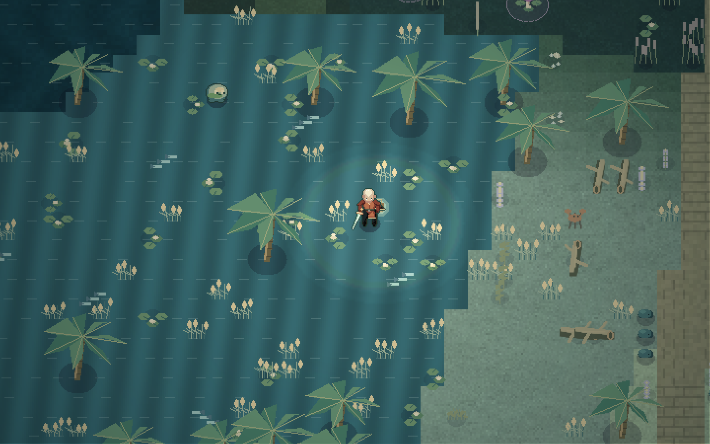
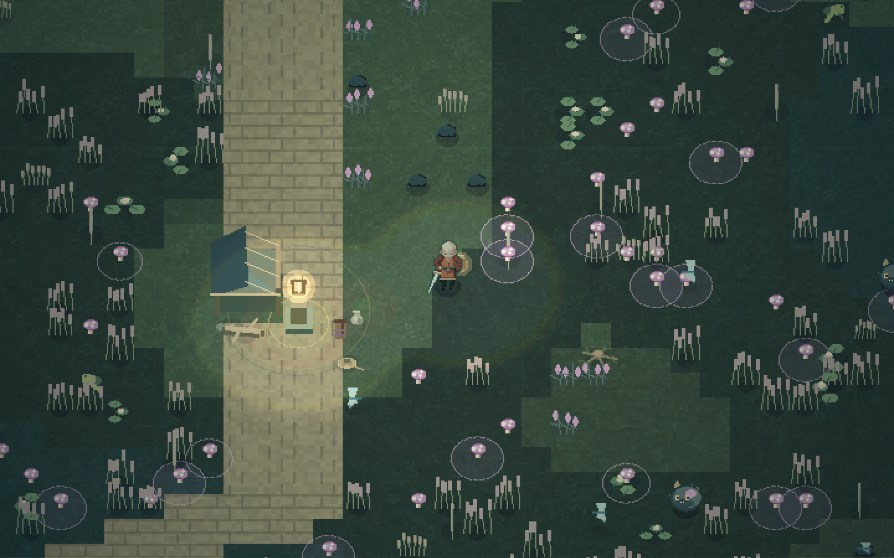
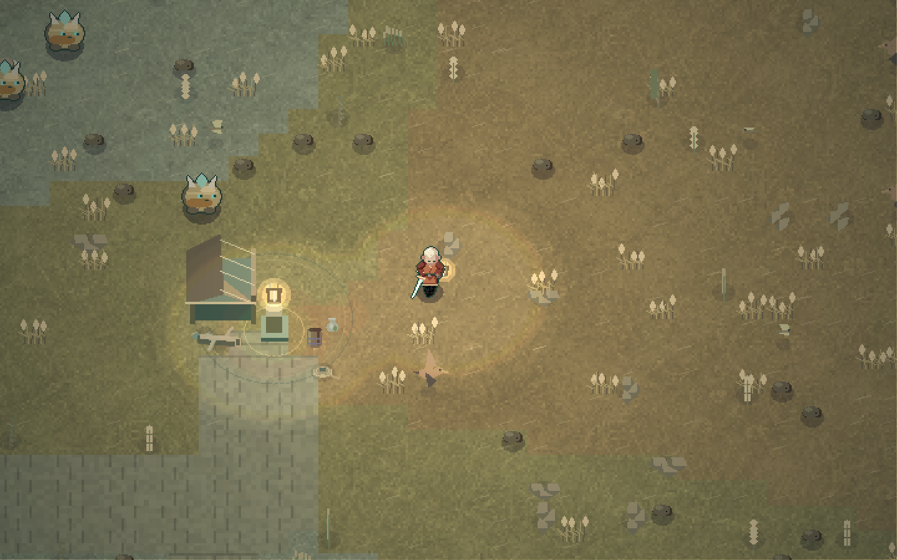
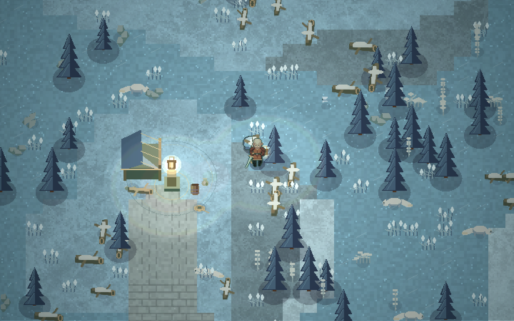
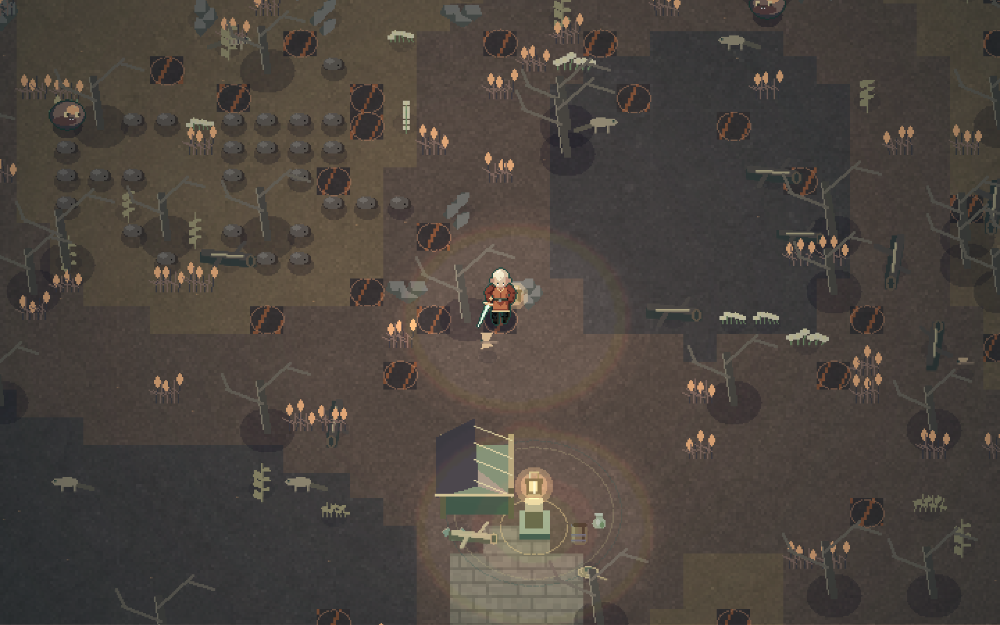
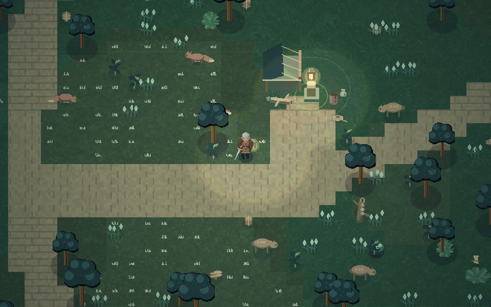

What this update adds
Lanternwake now continues beyond the great bell. Complete the dungeon and ring the bell. After a short ending beat, Mara enters the Open Reach. She keeps the lantern, Bell Seal, heart upgrade, and dungeon progress.
The Open Reach is a finite, streamed world. Its default size is 2,048 × 2,048 tiles: 4,194,304 tiles in 16,384 possible chunks. The Workshop can create worlds from 512 to 4,096 tiles per side. The data format also accepts 256-tile worlds for small tests.
The world has six biome rules, generated creatures and plants, old roads, camps, landmarks, a map, local saves, and recovery. Version 2.2 adds Wickhaven and 12 optional, repeatable jobs. The world has no required outdoor quest route. Use Explore the overworld on the title screen for a separate saved Field Test. The Field Test guide explains the town loop and local test reports. The named regions near the sanctuary form a test area for the intended world systems. The rest of the world is generated from the seed.
Wickhaven and the saved Field Test
Choose Explore the overworld to begin at the town board with a blade, lantern, seven hearts, and six echoes. This uses a separate saved run. It does not complete the dungeon. Continue field test resumes that run; New field test replaces only the test slot after confirmation. The pause menu can return you to town for free.
Wickhaven has 22 named citizens, four districts, 14 building fronts, and four market stalls. The board supports up to three active jobs. Twelve notices cover town conversations, delivery, travel, six terrain rules, wildlife observation, combat, and supply collection. Proof comes from actual actions. Jobs pay once and can be repeated. Meals and three visible coat colors give the rewards a use.
B opens the journal. N opens local notes. H uses a packed meal. The JSON report includes notes and game context; it is downloaded on the device and is not sent by the game. The title-screen Field guide summarizes the controls. The detailed Field Test guide includes the job catalog and verification scope.
The town is an automatic overlay near the sanctuary, rather than an editable landmark entry. The shared sampler supplies its collision, safe streets, water, and building heights to all runtime and authoring views. Existing world JSON and save fingerprints stay stable. Terrain outside the town rectangle and its short causeway stays compatible. Custom worlds offer only jobs with suitable targets.
Second pass: terrain, objects, and wildlife
The second pass adds 16 named ground surfaces, 24 biome object families, and 14 wildlife species. The terrain surfaces form broad patches. Related objects cluster within them. The six original movement and hazard rules remain in use.
| Region | Added ground and objects | Wildlife |
|---|---|---|
| Saltgrass Coast | Shell sand, damp shingle, salt meadow, tidal sand, driftwood, shell beds, sea lavender, and beach grass | White shorebirds, tide crabs, and silver tidefish |
| Glassreed Fen | Peat, bog flowers, reed silt, slate, exposed roots, lily pads, reed fans, and fallen bark | Reed frogs and glasswing dragonflies |
| Redwind Steppe | Ochre gravel, seed meadow, sandstone shelves, seed heads, thorn bushes, and wildflowers | Long-eared hares, steppe kestrels, and meadow butterflies |
| Rimeglass Reach | Powder snow, fissured ice, slate, snow-covered logs, frost brush, lichen, and cairns | Snow foxes and frost moths |
| Cinderfall | Broken basalt, ash and scoria, charred logs, rock fragments, copper grass, and pale ash flowers | Ash lizards and copper moths |
| Hushwood | Leaf litter, velvet moss, nurse logs, ferns, saplings, and bracket fungi | Moss deer, brush foxes, and meadow butterflies |
Wildlife is harmless. It has no health bar, collision with the player, combat loot or kill credit. The wildlife job rewards observation with E. Ground animals pause, forage, become alert, and retreat. Shorebirds take flight. Frogs and hares use a hopping gait. Insects hover and circle nearby lantern patches. Fish remain in water. Ground animals test their next position and use small movement steps to avoid crossing walls during a slow frame.
The generator places at most four wildlife anchors in each chunk. The runtime keeps at most 24 nearby animals, separate from the 18 hostile creatures. Distant animal positions are discarded. A return visit recreates them from their stable anchors. This avoids adding each animal to the journey save. The Workshop's vegetation setting controls ambient abundance; the danger setting controls combat and damaging hazards. Zero danger keeps wildlife. Zero vegetation removes generated wildlife and extra object clusters.
The Workshop inspector now names both the gameplay ground and its surface. It also lists local objects and wildlife. The close map view shows material variation. The full-world view keeps the biome and route colors easy to read. Streaming details in the game separate hostile creatures from wildlife and show measured frame cadence, update time, and draw time.
Camps now have cloth roofs, timber supports, roof ties, pots, rope, and stacked wood. All nine dungeon rooms received separate edge details: shell wrack, broken pottery, rope coils, waterlogged scrolls, oxidized brass pieces, moss, roots, or garden plants. The Salt Approach has a shorebird. The Still Garden has butterflies. These decorations stay away from puzzle objects and entrances.
Compatibility and system review
The new surface channel is cosmetic. It does not change the existing GROUND values, seed rules for movement terrain, old prop IDs, or canonical world JSON. The world fingerprint remains unchanged. Existing outdoor exploration and checkpoints therefore survive this update. The original detail baseline retains 3,600 terrain samples and 1,154 original props. The town update intentionally overrides its own rectangle and causeway. A second baseline, derived from that same historical source, compares the 3,547 terrain samples and 1,087 legacy props outside the new footprint. The separate surface buffer uses one byte per tile, or 256 bytes per chunk.
The review also removed two costs that grow with authored or played content. Saved cleared and broken IDs retain their JSON arrays, but the active world uses Set membership. Road segments use a bounding-volume tree, so distant groups of paths are rejected before exact distance checks. Terrain colors are prepared once per tile before a floor image is drawn. Animated animals and new objects use queued engine geometry with finite palettes and shapes.
The engine frame counter now measures wall-clock cadence. Previously it counted the capped simulation time, which could report at least 20 fps when a browser was slower or throttled. The simulation still caps a frame at 50 ms and uses bounded substeps. The correction makes diagnostics accurate; it does not promise a frame-rate target.
Enter and leave the world
- Complete the dungeon and ring the great bell.
- Wait for the short bell scene. The game enters the overworld automatically.
- Walk north toward the sanctuary gate. Press E when “Enter the sanctuary” appears to go back inside.
- In The Salt Approach, walk south. Press E at “Leave for the Open Reach” to go outside again.
- Rest at a waystone camp to restore health and set an outdoor checkpoint.
An old completed version-1 journey enters the overworld when you choose Continue. An unfinished old journey resumes in its dungeon room. A new journey still starts at the original dungeon entrance.
The main controls stay the same: WASD or arrows to move, J to strike, Space to dash, K to use the lantern, E to interact, M for the map, and Escape to pause. Mouse, standard gamepad, and touch bindings remain in the game.
The six biome rules
| Biome | Ground and danger | Player response | Visual identity |
|---|---|---|---|
| Saltgrass Coast | Shallow current adds drift and reduces normal movement to 78%. Deep water blocks travel. | Use firm ground or the old road. A lantern pulse stops the local current. | Pale salt grass, teal water, moving palms, pale flowers, and reed banks. |
| Glassreed Fen | Mire reduces normal movement to 60%. Some mire tiles release timed spores. | Read the expanding rings. Move away or pulse the lantern to firm the mire and suppress spores. | Dark green pools, tall reeds, purple spore blooms, and low vegetation. |
| Redwind Steppe | Gusts push through wind grass. Shell creatures defend the open ground. | Travel on the road or use a pulse for temporary shelter. | Dry gold ground, low rocks, moving grass, and wind streaks. |
| Rimeglass Reach | Blue ice retains momentum when input stops or changes. | Use snow for grip. The lantern gives immediate control within its light patch. | Blue ice, pale snow, pines, frost glints, and drifting snow. |
| Cinderfall | Vents warn before a short heat burst. Reed creatures use faster shots here. | Leave the marked vent or cool it with the lantern. | Charcoal ground, bare trees, amber vent rings, and drifting ash. |
| Hushwood | Dashing through pale echo grass alerts nearby creatures. Some creatures remain dormant until you approach or make noise. | Walk through the grass, or pulse before dashing. | Dark trees, pale grass, green light motes, and expanding sound rings. |
The pulse creates an 84-world-unit light patch. Most patches last four seconds. Frost and cinder patches last six seconds. At most five patches remain active. The existing lantern cooldown and player damage guard still apply.
Danger density controls creature placement, heat vents, and damaging spore blooms. Setting danger to zero removes those dangers. It keeps movement rules such as mire, ice, current, and wind. Detail density controls generated decoration.






Staged scenes from the actual engine. These images are separate from the earned gameplay test.
Open the authoring tool
Select World Workshop from the title or pause menu. The tool also lives at the site's /world-builder.html path. It edits the same world format that the game reads.
The center map shows the terrain. The left panel holds tools and generator settings. The right panel shows the selected ground, exact tile coordinates, preview controls, and validation results.
Scroll to zoom. Use Pan, the middle mouse button, or the right mouse button to move the map. The coordinate fields provide an alternative to placing content with the pointer.
Edit tools
| Tool | Key | Action |
|---|---|---|
| Inspect | I | Read the ground rule and select a preview point. |
| Biome | B | Paint a circular biome region. Later strokes take priority. |
| Landmark | L | Place a camp, arch, grove, kiln, obelisk, or sanctuary gate. Choose a name and entrance direction. |
| Road | R | Place a path through several points. Press Enter to finish it. Escape cancels the unfinished path. |
| Clear area | C | Reserve open, safe ground. Generated obstacles and hazards are removed. |
| Spawn | S | Move the world entry point. The generator clears its immediate landing area. |
| Erase | X | Remove a nearby authored region, landmark, clear area, or road point's entire road. |
| Pan | H | Move across the map. |
There is exactly one sanctuary gate. Stamping another sanctuary moves the existing gate. Erase cannot remove it. Landmark entrances can face south, west, north, or east. The model, entrance, rest position, and collision use the same quarter turn.
Road width is the full width in tiles. The allowed range is 2.5 to 8 tiles. This leaves enough room for the player's collision body. Roads create dry routes through generated water and obstacles. They do not cut through placed landmark walls.
The Workshop keeps up to 60 undo states. Ctrl-Z undoes an edit. Ctrl-Shift-Z restores it. A new edit after Undo clears the old redo branch. Import and New world are also undoable.
Save, test, and apply
Save draft keeps the open document on this browser. Export JSON writes a portable file. Export is the way to move a layout between browsers, devices, or source checkouts.
Play from here saves the draft, opens the game, and starts a separate preview at the selected clear tile. Preview supplies the completed-dungeon items so you can test the outdoor mechanics immediately. Preview does not write to the journey save. Periodic saves, pause, retry, title return, and sanctuary travel all preserve this isolation.
Use this world in the game stores the document as the browser's active world. It takes effect on the next overworld entry. A changed world fingerprint resets outdoor exploration, destroyed plants, defeated outdoor enemies, and outdoor checkpoints. The dungeon record remains. Use Play from here to test edits before applying them.
Changes in the browser do not change the published source preset. To ship a new default, export the JSON, put it in the source tree, validate it, and compile it as described below.
World checks
Check world validates the format and authored layout. It checks:
- A supported document and generator version.
- Finite coordinates, valid biome and landmark names, unique IDs, and collection limits.
- One sanctuary gate.
- A clear spawn and clear landmark entrances.
- Landmark footprints inside the world and outside each other.
- Road and entrance paths against landmark collision, including the player's radius.
- Connections from the spawn and landmark entrances to the generated road grid.
- Missing authored biome regions and landmarks without an authored road endpoint.
The path check uses swept player space against the tile collision bounds of landmark walls. It does not sample every tile along every long road. Roads already clear generated terrain. This keeps a long road across a large world cheap to check.
Validation is a structural check. It is not a proof that every generated island, every combat encounter, or every off-road route can be completed. Preview remains part of the authoring process.
Errors block Apply and Play from here. Import validates the document format before replacing the current document. An invalid import or command keeps the document, both history stacks, and revision intact. After a valid import, use Check world to inspect the layout.
Command-line authoring
The CLI uses Node built-in modules. It has no extra runtime dependency. Run these commands from the project root.
node tools/world-tool.mjs init worlds/my-world.json 2048 my-seed
node tools/world-tool.mjs validate worlds/my-world.json
node tools/world-tool.mjs inspect worlds/my-world.json 1024 1031
node tools/world-tool.mjs chunk worlds/my-world.json 64 64 chunk.json
node tools/world-tool.mjs overview worlds/my-world.json overview.pngThe overview command writes a PNG. Its optional arguments are span, left tile coordinate, and top tile coordinate:
node tools/world-tool.mjs overview worlds/open-reach.json nearby.png 320 864 871Apply one command or an array of commands from a JSON file:
node tools/world-tool.mjs edit worlds/open-reach.json worlds/authoring-example.json worlds/edited.json
node tools/world-tool.mjs validate worlds/edited.jsonThe shipped example paints a fen region, places a named obelisk, makes a clear area, and connects a road to the entrance. It does not alter the live game by itself.
To change the default world in a source build:
node tools/world-tool.mjs compile worlds/edited.json src/world-preset.js
npm test
npm run buildThe compile command rejects a layout with validation errors. It writes a normal JavaScript module. The game bundles that module into its static build. No runtime database, server terrain request, or external asset service is required.
Edit command format
[
{
"type": "paint",
"id": "east-fen",
"position": {"x": 1120, "y": 960},
"biome": "fen",
"radius": 28
},
{
"type": "landmark",
"id": "reed-obelisk",
"position": {"x": 1127, "y": 974},
"template": "obelisk",
"name": "The Reed Watch",
"rotation": 0
},
{
"type": "zone",
"id": "reed-watch-clearing",
"position": {"x": 1127, "y": 977},
"radius": 8,
"kind": "clear"
},
{
"type": "road",
"id": "reed-watch-road",
"points": [
{"x": 1110, "y": 969},
{"x": 1120, "y": 979},
{"x": 1127, "y": 977}
],
"width": 3
}
]The other commands are spawn, settings, and erase. Spawn takes a position. Settings takes a values object with supported document fields. Erase takes a position and a search radius.
When a browser supports document.modelContext, the Workshop registers two page tools: lanternwake_world_read and lanternwake_world_edit. They read and edit the same open WorldDocument as the visible controls. An edit changes the draft only. Apply and Export remain explicit actions in the tool.
Document and save boundaries
The world document contains the generator version, seed, extent, density controls, spawn, biome regions, roads, landmarks, and clear areas. All document coordinates use tiles. One tile is 16 world units.
The runtime player save contains the world definition and fingerprint, current position, checkpoint, visited chunk IDs, discovered landmark IDs, and sparse change lists. Generated ground is rebuilt from the seed. It is not serialized as millions of tiles.
Persistent outdoor changes currently include defeated creatures and cut grass. Living distant creatures sleep after they leave the active area. Their health and pursuit state reset if they are later created again. Dropped pickups and temporary light patches are transient. These are deliberate simulation boundaries for this framework.
The game save now uses document version 2. The existing engine storage key remains compatible. The engine adds its my3d2dge: prefix. The raw Workshop keys are separate:
| Stored item | Browser key |
|---|---|
| Journey save | my3d2dge:lanternwake:save:v1 |
| Player settings | my3d2dge:lanternwake:settings:v1 |
| Applied world | lanternwake:world:v1 |
| Workshop draft | lanternwake:workshop:v1 |
| Preview handoff | lanternwake:preview:v1 |
There is no account or cloud-save system. Browser storage can be cleared or become full. The UI reports failed save attempts. Keep exported world JSON for durable authoring work.
Streaming and engine design
The user-supplied my-3D2dge v0.6.0 game edition remains the foundation. Its Game, View, Body, Renderer, Humanoid, Blob, Combo, lighting, particles, audio, and input systems still run the game.
The overworld adds an adapter around these systems. It does not allocate one full-world TileMap or FlowField.
| System | Implemented bound |
|---|---|
| Chunk dimensions | 16 × 16 tiles |
| Active terrain | Up to 3 × 3 chunks |
| Prefetch target | Up to 5 × 5 chunks |
| Terrain cache | 49 chunks |
| Cached projected floor images | 12 |
| Active hostile creatures | 18 |
| Active ambient animals | 24 |
| Concurrent worker requests | 2 |
| Local navigation field | 41 × 41 tiles |
| GPU height window | 64 × 64 tiles |
| Temporary lantern patches | 5 |
| Workshop history | 60 states |
The active ring is available before the player can reveal missing ground. A worker prepares farther chunk data. If workers fail, the main thread prepares queued chunks incrementally. Collision can query the deterministic sampler without allocating a far chunk.
The floor cache is separate from the data cache. In the game's fixed view, terrain rasters use half the scale in both dimensions. They are then drawn to shared projected edges. This reduces per-pixel terrain work and prevents visible chunk gaps. Actors, landmarks, menus, and effects keep their normal resolution. The renderer prepares at most one extra floor per frame in the direction of travel.
Stable entity IDs come from chunk and tile coordinates. That gives the save a reliable way to remember defeated creatures after a chunk leaves memory. Generated prop variants and sizes are quantized so the engine's shared sprite cache does not grow with every new tile.
GPU origin
The optional Cel shaded and Pixel art filters remain available with adjustable parameters. Standard Canvas is the default.
The GPU receives a bounded height window around the player. World coordinates are translated by the window origin before height lookup and shadow-caster rasterization. Sampling outside that window returns no height. This prevents a large world from creating a world-sized texture.
Native shader tests move the camera, lights, and height window by (16,384, 32,768) world units. Correct translation produces the same image byte for byte. A deliberately wrong origin changes the output. This is a software graphics test, not a physical GPU benchmark.
Source map
| File | Responsibility |
|---|---|
| src/world-core.js | Schema, normalization, seed functions, terrain sampling, chunks, geometry checks, and overview raster |
| src/world-preset.js | Compiled default document |
| src/world-stream.js | Chunk cache, worker scheduling, collision adapter, local navigation, and GPU window |
| src/world-worker.js | Worker generation and overview requests |
| src/world-runtime.js | Biome movement, hazards, creatures, landmarks, scene dressing, and floor cache |
| src/world-wildlife.js | Bounded wildlife simulation, habitat rules, and animal drawing |
| src/world-detail-art.js | Biome objects and shared dungeon detail drawing |
| src/world-document.js | Atomic edits, undo, redo, import, and export |
| src/world-builder.js | Workshop interface and optional page tools |
| tools/world-tool.mjs | Portable CLI and PNG output |
| src/game.js | Region travel, completion exit, shared combat, save migration, and preview isolation |
| src/main.js | Menus, world map, biome status, and preview banner |
| public/my-3d2dge.js | Engine derivative, including bounded GPU height origins |
Design decisions and effort
I put most implementation effort into the world boundary: streaming, collision, travel, saving, and recovery. A large map is useful only if a player can move through it, leave it, and return to the same journey.
The next priority was authoring. The Workshop and CLI share one model so a painted layout, an agent edit, and a compiled source preset cannot quietly become different worlds. The same normalizer protects each entry point. Undo and isolated preview make iteration practical.
The biome work gives the existing lantern six outdoor uses. Each region changes a movement decision while preserving the controls learned in the dungeon. Terrain cues appear before damage. Safe roads and camps give the player recovery options without imposing a quest.
The final passes focused on art and verification. The world uses an original six-material atlas, animated palms and reeds, bare cinder trees, pines, low plants, original landmark geometry, and ambient motion. Checks found and corrected blocked entrances, a preview storage-key mismatch, unsafe enum lookups, unbounded prop variations, obsolete ending UI expectations, and incorrect assumptions about terrain raster cost.
This is an effort allocation by risk, rather than a measured timesheet. It produces a reusable exploration framework before the next content phase.
Verification and remaining limits
Run npm test for the earned dungeon route, region travel and saves, UI checks, GPU fallback, data validation, cache bounds, and biome mechanics. Run python3 qa/validate_shaders.py for the optional native shader check. Run node qa/render-overworld.mjs to reproduce the seven staged world images.
The fresh route earns the dungeon items, solves its puzzles, defeats the boss, rings the bell, and enters the overworld through actual engine input. Focused fixtures check legacy saves, incomplete world records, death recovery, preview isolation, biome hazards, and translated GPU coordinates. Tests that use fixtures are marked as such.
The earlier Workshop browser check created a world, placed a west-facing arch, checked the layout, used undo and redo, restored the default layout, and saved the draft. The restored layout passed 158 geometry checks with no errors or warnings. The evidence folder contains a screenshot of that earlier result. Its preview session was interrupted before the planned movement and map checks.
The second pass opened the enriched inspector, entered the isolated overworld preview, observed a changed tile position, and opened the world map and streaming counts. After preview recovery, the map showed both movement ground and cosmetic surface. Its live diagnostics showed 25 of 49 terrain chunks, 12 of 12 floor images, 0 of 18 hostiles, 7 of 24 wildlife, and no pending jobs. The corrected wall-clock counter showed 5 fps in this cloud browser, with 0.5 ms update and 19.5 ms draw for the sampled frame. These observations do not establish device performance or an uninterrupted full browser journey. The new browser image was inspected, but its file transfer failed, so it is not included as an evidence artifact. Native Canvas images cover the gate and all six biomes with no engine render errors.
Physical controller, touch, audio listening, named GPU devices, and sustained frame-rate targets still need direct device testing. Native Canvas frame timings in the evidence are diagnostic measurements from this runtime. They are not a promise of 60 frames per second.
Wickhaven now provides the first authored settlement and optional work. A future authoring update can turn settlement layouts into explicit Workshop templates. The current town is placed by deterministic rules near the sanctuary; its causeway avoids existing landmark footprints. See the Field Test guide for the current content boundary.